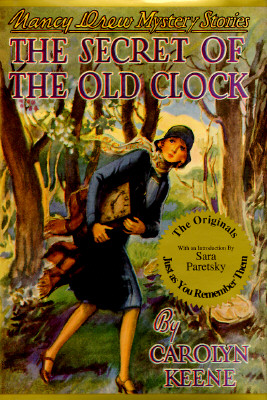
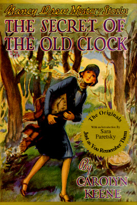

The games are made by a group called Her Interactive. These games wher inteded to be fun and educational with history placed in the different games for the player to read about. The historacial events and accuacy were never altered but, the game was made so it was as if the event happened in that area or your are looking for historical lost treasure.
Books in this series were picked up by different authors over the years to keep the franchise going and Nancy Drew sluthig on in her adventures around the world. There are multiple cases with the same number becase the authors changed so often.
 
Homepage

Homepage